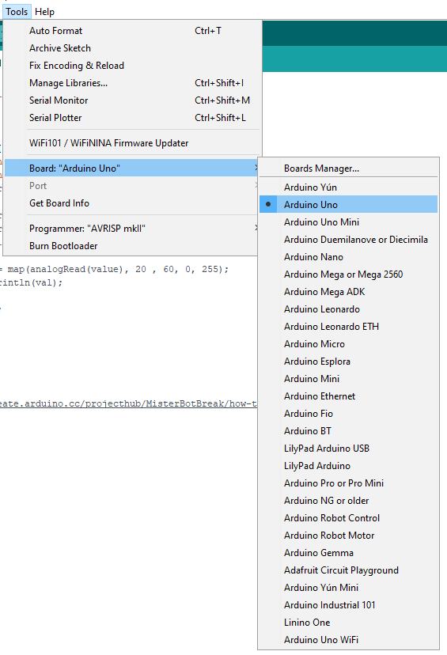
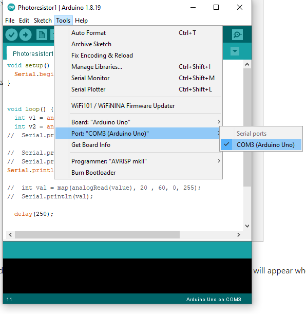
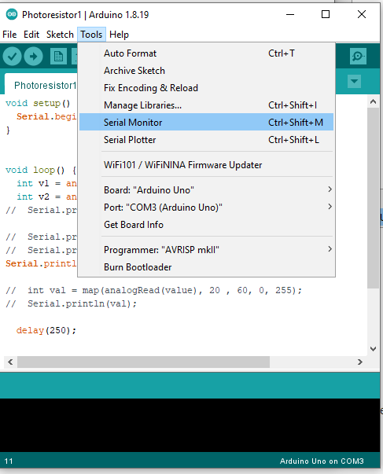
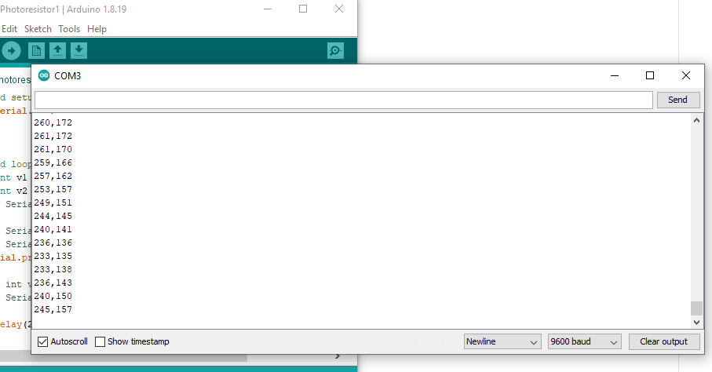

Download: https://www.arduino.cc/en/software
Arduino IDE 2.0.0 : Newest and open source, but UI is different from most of the tutorial
Legacy IDE (1.8.X): Stable versions
Select the Board (we should be using 'Arduino Uno' in class)
Select which port you are using for the arduino board. Port name is different depending on the device. (A little check mark will appear when you select the port; make sure you have it!)
Use Verify button to check if there is any errors in your code. Use Upload button to upload your code from local to the board.
Once your code uploaded to the board, you don't have to upload again until a new code goes to the board.
This is where you check the signal send by Arduino board. (A serial port will be taken when the Monitor/Plotter running. Therefore you have to closing them if running a processing code.)
 